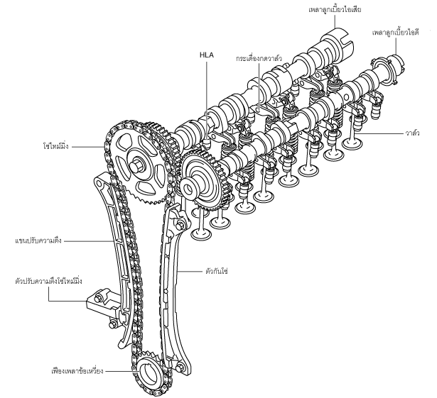

กลไกวาล์ว [SKYACTIV-D 2.2]
id0110s5001200
รายละเอียด
• มีการใช้ระบบวาล์วแบบ DOHC และประกอบด้วยวาล์วสี่ตัว (วาล์วไอดีสองตัวและวาล์วไอเสียสองตัว) ต่อกระบอกสูบรวมทั้งหมด 16 ตัว และควบคุมการทำงานด้วยเพลาลูกเบี้ยวสองชุด
มุมมองโครงสร้าง

ac5wzn00000123